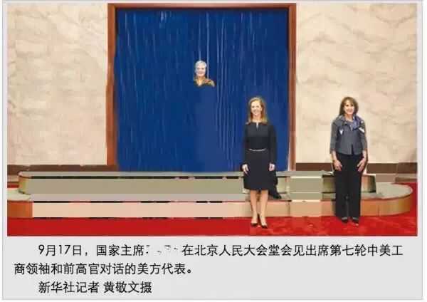
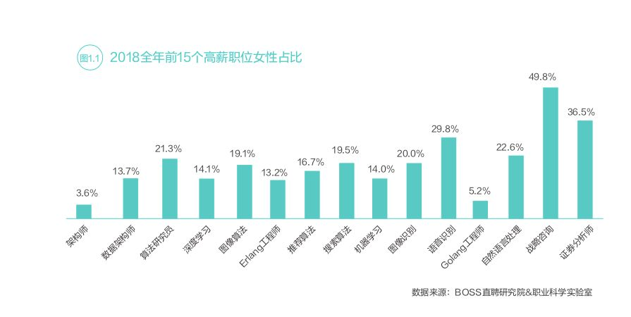
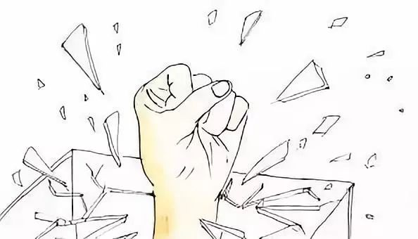

玻璃天花板|什么在阻碍你成为一个女领导？
转自公众号：074职场女性法律热线
http://mp.weixin.qq.com/s?__biz=MzU3ODIzNjcxMw==&mid=2247484647&idx=1&sn=6d701f4ce9fc751450743c43d11ed277

身为女性，我从未要求特殊礼遇。我只希望社会上的男性兄弟们，不要再压迫我们女性同胞。
——《鲁斯·巴德·金斯伯格 RBG》
曾经有一个企业管理咨询师问我：你的职业榜样是谁？我思考后发现竟然没有。归其原因，我并不喜欢现在被男性定义的领导。同时，各个行业的高层中女性都极度缺乏，对女性来说可选择的榜样十分有限。
玻璃天花板是指女性在职场中的升迁上的无形障碍。女性得不到晋升，并非因为她们能力不足，而是结构性的屏障所致。职场上玻璃天花板的结果就是高层女性的缺乏。BOSS直聘《2019中国职场性别差异报告》显示，随着工作年限的增加， 男性和女性晋升几率的差异逐步呈现，具有3-5年、5-10年和10年以上工作经验的男性比女性的晋升几率分别高1.5%、12.1%和8.3%。

（此图P掉了男性，原图24人）
宋梦丽在《社会资本视角下公共部门女性职业玻璃天花板困境研究》中指出，公共部门女性领导的比例不高、副职偏多、工作的专业性不强、职务低、岗位边缘，仍处于弱势地位。最新一届的全国人大代表共2980人，女代表仅742人，占代表总数的比例不超过四分之一。
可见，女性的晋升依然受到限制。这些限制究竟是什么呢？
1
社会信任缺失：女人不行？
每次说到女性领导少，都会有人举例说某个女性领导真的不怎么样。这背后反映的是社会对女性的不信任，似乎只有所有的女性都足够强才能证明女性可以。女性个体很难通过证明自己的能力来获得认可，因为她从属于女性群体。
在父权社会中，为了证明自己能力的女性比比皆是，女性一旦获得机会就会紧紧抓住。80年代开始实施一胎化政策，客观上促进了女性的受教育水平的提高。2009年开始，全国女大学生的人数超过男生。在职场中，女性的努力也并不输给男性，只是女性的努力和价值被赤裸裸地忽视。当然，不是所有的女性都有足够的能力。同样，并非所有男人的能力都很好，只是社会对男性更加宽容。
很多企业宁愿选择能力更差的男性，也不愿招能力优秀的女性，甚至还愿意付出更多的薪酬。用人单位真的只有利益的考量吗？工作能力差的男性对用人单位的发展来说是长期的损失。 企业同样需要付出人力和金钱的成本，然而用人单位却心甘情愿且持之以恒地为男性投资。《2019中国职场性别差异报告》显示，2018年前15个高薪岗位的女性占比均不到5成。除战略咨询和证券分析师外，其余岗位女性占比普遍在30%以下。

2
男人定义“领导特质”：女人没有领导特质？
作为一个领导需要拥有什么样的特质呢？理性、果敢、有远见、直面失败、有担当等是被公认的领导特质。这些特质与传统刻板印象里的男性特质不谋而合。领导的特质从一开始就由男性决定，且女性被认为缺乏领导特质。可是，女性并未参与对领导特质的界定。男性拥有这些特质的时候得到的通常是正面评价。吊诡的是，如果女人拥有这些特质就会被认为“bossy”（专横）。
社会关注女性的外貌、情感多于关注女性的能力。借由塑造女性的情感化来证明女性不够理性，不适合做领导。兼顾家庭和工作是女性的专属，只要女性在自己的领域内取得一定的成就，必然会被问如何做到兼顾家庭和工作。男性则不需要面对这样的问题。
最新的漫威电影《惊奇队长》打破了媒介中对女性形象的传统设定。惊奇队长不再是一个性感的花瓶。整个剧情里女主没有与男人的情感戏，女主的成长也不依附于某个男人。相反，整个电影展现了女性的成长、坚韧和勇敢。这些特质不分性别，评价女性是否能够做领导，关注她是否拥有这些特质就好。
3
女性的关系网络平级化：女性如何自立自强？
随着科技的发展，互联网成为人们获取信息和资源的重要渠道。人们之间的关系逐步原子化，不再依靠强关系来积累社会资本。强关系是指以家庭为单位展开的人际关系圈。当下的社会关系正在进行变革，随着阶层的固化，朋友、同事、领导等社会关系对个人的现实意义要远远大于家庭可以提供的支持。
女性的社会关系主要是同辈间的关系，趋于平级化。而平级化的关系网络得到的社会回报有限。Leanin是一个女性个人和职业发展互助平台。这种互助组织是女性在现有性别不友好的职场环境中的抱团，一定程度上满足了女性的现实性社会性别需求，让女性之间可以聊个人成长和职业困惑。可是，此类互助组织没有挑战制度性的限制，女性要想突破既有的平级化的关系网络几乎不可能。一味地强调女性的自立自强是忽略女性的付出和努力。
4
权力结构的固化:男性不愿放权
在性别权力不对等的社会中，玻璃天花板是由男性共同加固的堡垒，用以守住他们的权力。父权社会通过剥夺女性的无偿劳动来限制女性的个人发展和公共参与，将女性和家庭捆绑，导致女性在家务劳动和生育等事务上付出大量的时间。女性通过抗争逐步打破了男性共同建造的纸牌屋，#MeToo是最好的示例。
#MeToo带来的社会变革的意义远远超出我们的想象，它的意义不仅在于女性讲出性骚扰，还是女性团结起来对整个父权结构的挑战。男性掌控的权力结构已经在改变。#MeToo撕下了父权社会虚伪的面具，将女性受到的压迫一一展示出来。2018年11月，全球各地的谷歌员工“出走罢工”以抗议公司对性骚扰的包庇。他们向谷歌管理层提出的诉求不止限于性骚扰，还包含了薪资和机构的平等、改善公司的层级等。
谷歌罢工
2018年10月，《纽约时报》统计了因为#MeToo丢掉工作的男性工作岗位的继任情况。在美国，至少有201名因被指控性骚扰丢掉工作的男性，98人已经有了继任者。其中51个职位是由女性接替。这其中有些是临时替代、还有一些是永久替代。
2018年美国中期选举中，至少有87名女性赢得众议员席位。此次选举中，参选的女性人数创新高。据罗格斯大学美国妇女与政治中心的统计，今年有476名女性登记参选众议员，远超过2012年时298人的纪录。一些女性参选人的动力就是对川普的不满。她们无法接受一个受到性骚扰指控、吹嘘自己如何抓女性下体的总统。川普的厌女、#MeToo的爆发都激发了女性参与政治的积极性。

在中国，#MeToo亦是2018年最受关注的社会议题。从高校到职场，从公益圈到媒体界、宗教领域，性骚扰的诉说和举报数量是前所未有的多。去年7月，《人物》曾在24小时内收到1700个和性骚扰、性侵有关的故事。#MeToo的支持者同样是前所未有地广泛，远远突破了关注女权的圈子。
#MeToo表面上是在讲述女性被性骚扰的经历，实质上是在诉说父权社会里男性对女性的压迫和剥削。职场天花板也是女性共同面对的困境。你也可以讲出职场中的性别不公，我们一起创造职场中的#MeToo。
参考资料：
https://www.qdaily.com/articles/57718.html
https://www.dw.com/zh/2018%E5%B9%B4%E6%98%AF%E5%90%A6%E4%BC%9A%E6%88%90%E4%B8%BA%E7%BE%8E%E5%9B%BD%E6%94%BF%E6%B2%BB%E7%9A%84%E5%A5%B3%E6%80%A7%E5%B9%B4/a-45368668
宋梦丽:《社会资本视角下公共部门女性职业玻璃天花板困境研究》
-END-
部分图源自网络，侵权请联系我们